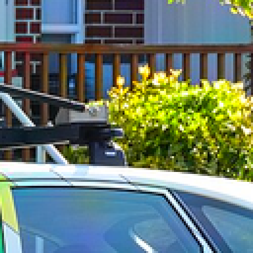
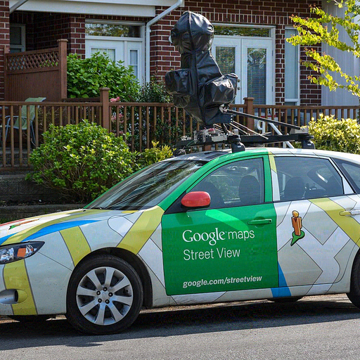
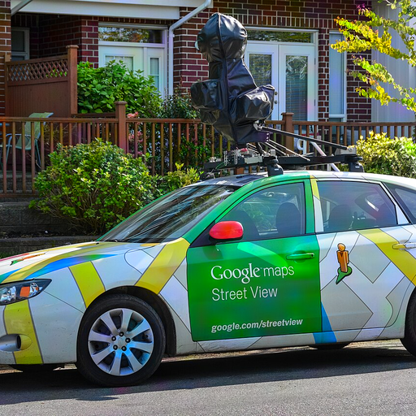
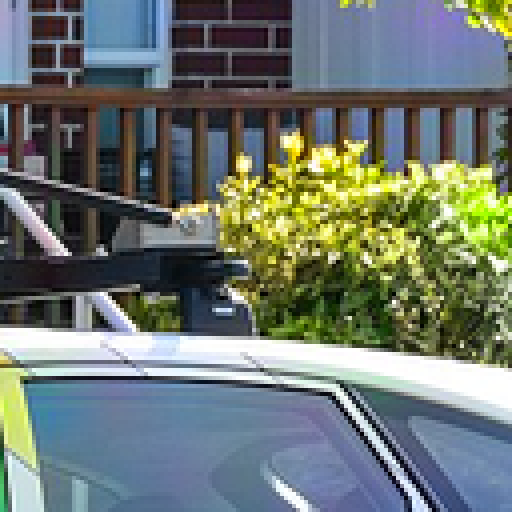

把失真預算用滿之後，防禦圖長什麼樣
E27 把 alpha_lpips 設為 0，於是 τ 以內的失真對
最佳化完全免費，它會把預算用滿。要判斷的只有一件事：這張防禦圖，你能接受
它跟原圖是「同一張照片」嗎。請按數字鍵（或點按鈕）原地切換。
需要特別注意色偏：鈍化約束只看亮度，對色度變化在構造上就是盲的；
若 LPIPS 也對它盲目，那就是重蹈 site S 用 LPIPS 買模糊的覆轍，只是換成用
色度買。實測有格子在三道 hinge 全部未啟動（L_fid = 0）的同時
PSNR 只有 24.75 dB、L∞ 達 0.62。
右側為 4× 最近鄰放大，位置取原圖梯度能量最高處，兩版本同一座標。
car_00
e27d_C_lr0.3 · lr=0.3 · α_lpips=0.0
site C


展開數值（先看圖）
| 量 | 實測 | 門檻／上限 |
|---|
| LPIPS（受 τ 約束） | 0.0409 | 0.05 |
| 鈍化偏差（受 τ_acut 約束） | 0.9330 | 0.04 |
| PSNR (dB)（不在梯度裡） | 24.5191 | |
| L∞（beta_linf=0，不在梯度裡） | 0.9949 | |
| 編輯偏移 edit_shift | 0.3744 | 1.0 |
| 實際步數 | 60.0000 | 60 |
car_01
e27d_C_lr0.3 · lr=0.3 · α_lpips=0.0
site C
展開數值（先看圖）
| 量 | 實測 | 門檻／上限 |
|---|
| LPIPS（受 τ 約束） | 0.0529 | 0.05 |
| 鈍化偏差（受 τ_acut 約束） | 0.9923 | 0.04 |
| PSNR (dB)（不在梯度裡） | 33.5342 | |
| L∞（beta_linf=0，不在梯度裡） | 0.1821 | |
| 編輯偏移 edit_shift | 0.3438 | 1.0 |
| 實際步數 | 60.0000 | 60 |
car_00
e27d_P_lr0.03 · lr=0.03 · α_lpips=0.0
site P


展開數值（先看圖）
| 量 | 實測 | 門檻／上限 |
|---|
| LPIPS（受 τ 約束） | 0.0406 | 0.05 |
| 鈍化偏差（受 τ_acut 約束） | 0.9757 | 0.04 |
| PSNR (dB)（不在梯度裡） | 34.0140 | |
| L∞（beta_linf=0，不在梯度裡） | 0.2247 | |
| 編輯偏移 edit_shift | 0.3485 | 1.0 |
| 實際步數 | 60.0000 | 60 |
car_01
e27d_P_lr0.03 · lr=0.03 · α_lpips=0.0
site P
展開數值（先看圖）
| 量 | 實測 | 門檻／上限 |
|---|
| LPIPS（受 τ 約束） | 0.0475 | 0.05 |
| 鈍化偏差（受 τ_acut 約束） | 0.9878 | 0.04 |
| PSNR (dB)（不在梯度裡） | 34.9744 | |
| L∞（beta_linf=0，不在梯度裡） | 0.3293 | |
| 編輯偏移 edit_shift | 0.3965 | 1.0 |
| 實際步數 | 60.0000 | 60 |
car_00
e27d_C_lr0.1 · lr=0.1 · α_lpips=0.0
site C




展開數值（先看圖）
| 量 | 實測 | 門檻／上限 |
|---|
| LPIPS（受 τ 約束） | 0.0286 | 0.05 |
| 鈍化偏差（受 τ_acut 約束） | 0.9616 | 0.04 |
| PSNR (dB)（不在梯度裡） | 27.9215 | |
| L∞（beta_linf=0，不在梯度裡） | 0.8753 | |
| 編輯偏移 edit_shift | 0.4076 | 1.0 |
| 實際步數 | 60.0000 | 60 |
car_01
e27d_C_lr0.1 · lr=0.1 · α_lpips=0.0
site C
展開數值（先看圖）
| 量 | 實測 | 門檻／上限 |
|---|
| LPIPS（受 τ 約束） | 0.0253 | 0.05 |
| 鈍化偏差（受 τ_acut 約束） | 0.9951 | 0.04 |
| PSNR (dB)（不在梯度裡） | 36.4115 | |
| L∞（beta_linf=0，不在梯度裡） | 0.1521 | |
| 編輯偏移 edit_shift | 0.3832 | 1.0 |
| 實際步數 | 60.0000 | 60 |